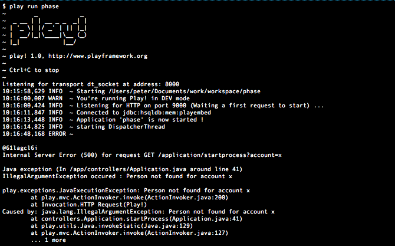
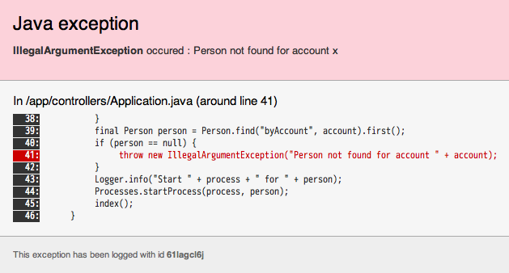

Usability – details matter as much as features
Perhaps the most striking thing about the Play framework is that its biggest advantage over other Java web application development frameworks does not fit into a neat feature list, and is only apparent after you have used it to build something. That advantage is usability.
Note that usability is separate from functionality. In what follows, I am not suggesting that you cannot do this in some other framework: I merely claim that it is easier and more pleasant in Play. I need to emphasise this because geeks often have a total blind spot for usability because they enjoy figuring out difficult things, and under-appreciate the value of things that Just Work.
Written by web developers for web developers
The first hint that something different is going on here is when you first hear that the Play framework is ‘written by web developers for web developers, an unconventional positioning that puts the web’s principles and conventions first and Java’s second. Specifically, this means that the Play framework is more in line with the W3C’s Architecture of the World Wide Web than it is with Java Enterprise Edition (Java EE) conventions.
URLs for perfectionists
For example, the Play framework, like other modern web frameworks, provides first-class support for arbitrary ’clean’ URLs, which has always been lacking from the Servlet API. It is no coincidence that at the time of writing (March 2010), Struts URLs for perfectionists, a set of work-arounds for the Servlet API-based Struts 1.x web framework, remains the third-most popular out of 160 articles on www.lunatech-research.com despite being a 2005 article about a previous-generation Java web technology.
In Servlet-based frameworks, the Servlet API does not provide useful URL-routing support; Servlet-based frameworks configure web.xml to forward all requests to a single controller Servlet, and then implement URL routing in the framework, with additional configuration. At this point, it does not matter whether the Servlet API was ever intended to solve the URL-routing problem and failed by not being powerful enough, or whether it was intended to be a lower-level API that you do not build web applications in directly. Either way, the result is the same: web frameworks add an additional layer on top of the Servlet API, itself a layer on top of HTTP.
Play combines the web framework, HTTP API and the HTTP server, which allows it to implement the same thing more directly with fewer layers and a single URL routing configuration. This configuration, like Grails’ and Cake PHP’s, reflects the structure of an HTTP request – HTTP method, URL path, and then the mapping:
# Play 'routes' configuration file…
# Method URL path Controller
GET / Application.index
GET /about Application.about
POST /item Item.addItem
GET /item/{id} Item.getItem
GET /item/{id}.pdf Item.getItemPdf
In this example, there is more than one controller. We also see the use of an id URL parameter in the last two URLs.
Better usability is not just for normal people
Another way of looking at the idea that Play is by and for web developers is to consider how a web developer might approach software design differently to a Java EE developer. When you write software, what is the primary interface? If you are a web developer, the primary interface is a web-based user-interface constructed with HTML, CSS and (increasingly) JavaScript. A Java EE developer, on the other hand, may consider their primary interface to be a Java API, or perhaps a web services API, for use by other layers in the system.
This difference is a big deal, because a Java interface is intended for use by other programmers, while a web user-interface is intended for use by non-programmers. In both cases, good design includes usability, but usability for normal people is not the same as usability for programmers. In a way, usability for everyone is a higher standard than usability for programmers, when it comes to software, because programmers can cope better with poor usability. This is a bit like the Good Grips kitchen utensils: although they were originally designed to have better usability for elderly people with arthritis, it turns out that making tools easier to hold is better for all users.
The Play framework is different because the usability that you want to achieve in your web application is present in the framework itself. For example, the web interface to things like the framework documentation and error messages shown in the browser is just more usable. Along similar lines, the server’s console output avoids the pages full of irrelevant logging and pages of stack traces when there is an error, leaving more focused and more usable information for the web developer.

Try to imagine a JSF web application producing a stack trace this short. In fact, Play goes further: instead of showing the stack trace, the web application shows the last line of code within the application that appears in the stack trace. After all, what you really want to know is where things first went wrong in your own code.

This kind of usability does not happen by itself; the Play framework goes to considerable effort to filter out duplicate and irrelevant information, and focus on what is essential.
Quality is in the details
In the Play framework, much of the quality turns out to be in the details: they may be small things individually, rather than big important features, but they add up to result in a more comfortable and more productive development experience. The warm feeling you get when building something with Play is the absence of the frustration that usually results from fighting the framework.
By Peter Hilton, originally published on the Lunatech Research blog.